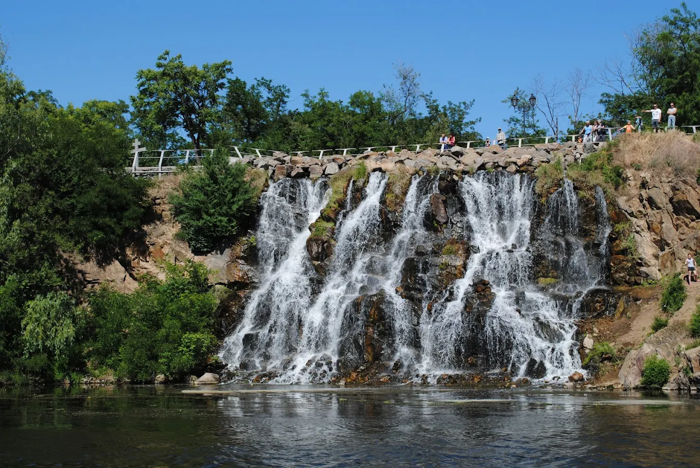

Карта зі спливаючими заголовками
Наведіть курсор на різні частини зображення

Області для тестування:
• Верхня частина (0,0-600,100) -
Блакитне небо
• Трикутник у центрі -
Водоспад
• Ліва сторона -
Скеля
• Нижній лівий кут -
Рудник